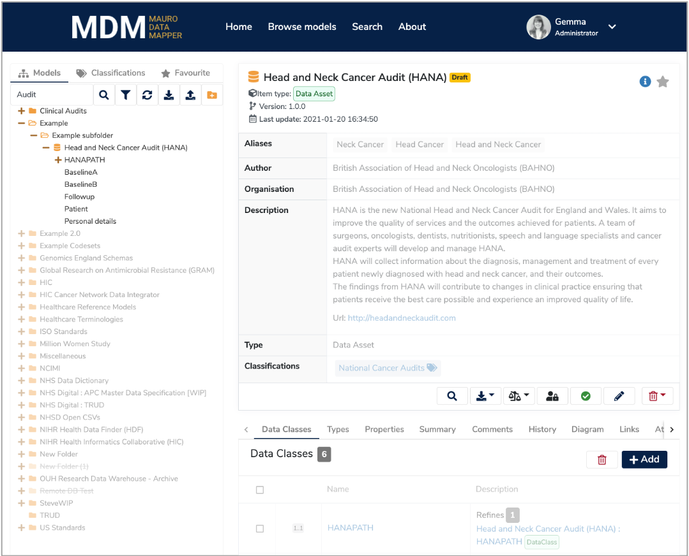
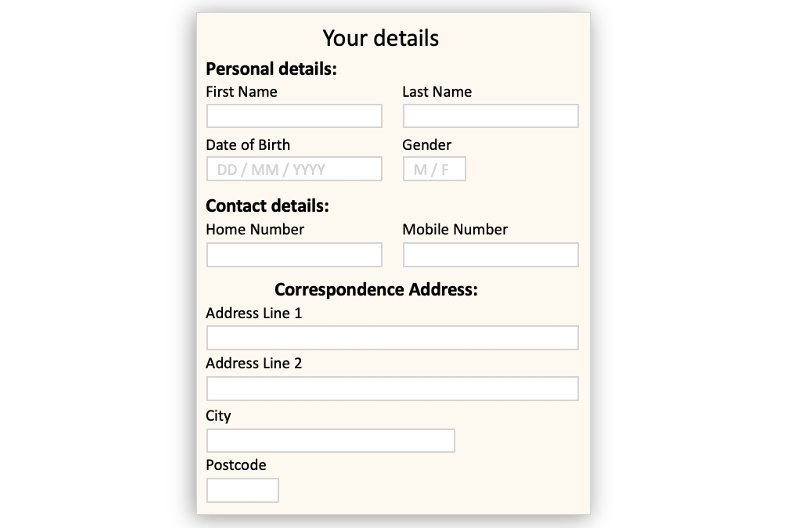
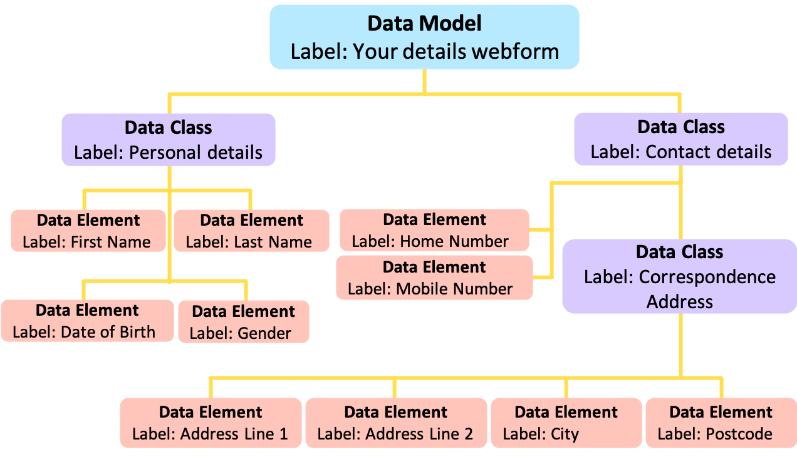

Introduction
What is Mauro Data Mapper?¶
Mauro Data Mapper is a toolkit for the design and documentation of databases, data flows, and data standards, as well as related software artefacts such as data schemas and data forms. It was originally developed for the description of data in clinical research, but it is equally applicable in other settings.
Data and software artefacts can be described as linked, versioned Data Models. The links let us re-use and relate data definitions, recording and reasoning about semantic interoperability. The versioning lets us keep track of changes in design, in implementation, or in understanding.
Why is metadata important?¶
To fully understand the meaning of data, first we need to know some further information about its context, known as metadata.
For example, consider a blood pressure reading. Although this has standard units, the method and state of the patient at the time the measurement was taken will affect the recorded value. Therefore, by outlining this additional information, the reading can be understood and interpreted more accurately. In this way, metadata allows data to be more searchable, comparable and standardised enabling further interoperability.
How does Mauro Data Mapper work?¶
The Mauro Data Mapper is a web based tool which stores and manages descriptions of data. These can be descriptions of data already collected, such as databases or csv files. Or these can be descriptions of data you wish to collect or transfer between organisations, such as a specification for a webform or an XML schema.
Mauro Data Mapper represents both types of descriptions of data as Data Models. These are defined as a structured collection of metadata and effectively model the data that they describe.

Each Data Model consists of several Data Classes, which are groups of data that are related in some way. For example, a group of data that appears in the same table of a database or the same section of a form. Data Classes can sometimes also contain Nested Data Classes.
Within each Data Class is then a number of Data Elements which are the descriptions of an individual field or variable.
For example, a webform where patients enter their details would be a Data Model. This form could consist of two separate sections such as 'Personal details' and 'Contact details' which would each be a Data Class. The individual entries within each of these sections, such as 'First Name', 'Last Name', 'Date of Birth' etc, would each be a Data Element.
However, there might be a section within another section on the webform, such as 'Correspondence Address' which lies within 'Contact details'. In this case, 'Correspondence Address' would become a Nested Data Class, where the 'Contact details' Data Class would be the parent.


By organising metadata in this way, Mauro Data Mapper allows users to easily search data but also automatically import database schemas and export forms; helping to record data in standardised formats.
An open-source community¶
The Mauro platform and plugins are distributed under an open source Apache 2.0 license. We are keen to build an active community of users and developers, and encourage contributions to our code and documentation, and facilitate model sharing.
Support¶
The development of Mauro Data Mapper has been funded by the NIHR Oxford Biomedical Research Center as part of the NIHR Health Informatics Collaborative (HIC).
The NIHR HIC is a partnership of 28 NHS trusts and health boards, including the 20 hosting NIHR Biomedical Research Centres (BRCs), working together to facilitate the equitable re-use of NHS data for translational research.
The NIHR HIC has established cross-site data collaborations in areas such as cardiovascular medicine, critical care, renal disease, infectious diseases, and cancer. Mauro Data Mapper, and its previous incarnation, the Metadata Catalogue, has been used for collaboratively editing Data Models for research, and for generating software artefacts such as XML Schema.